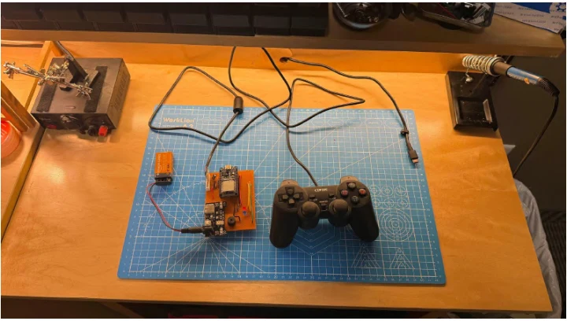
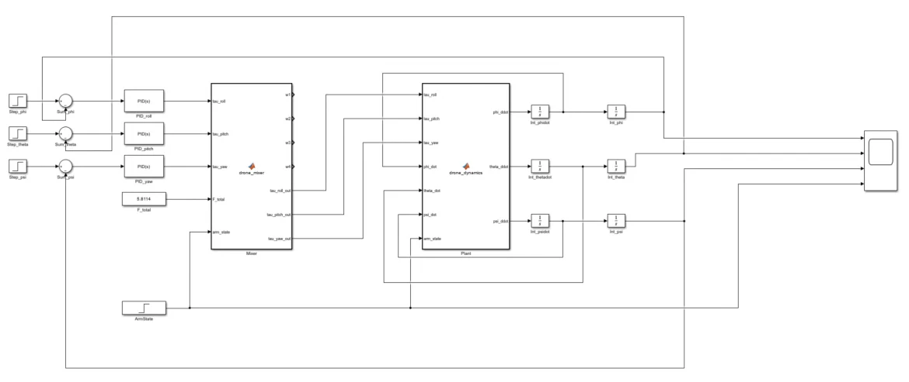
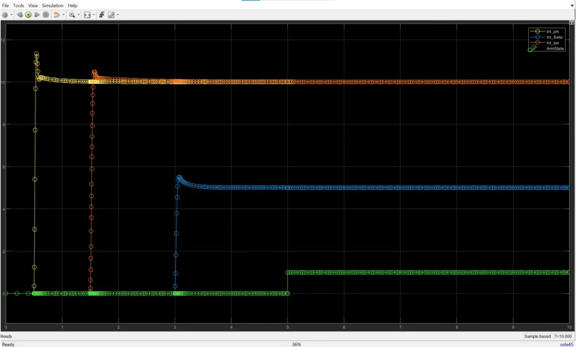
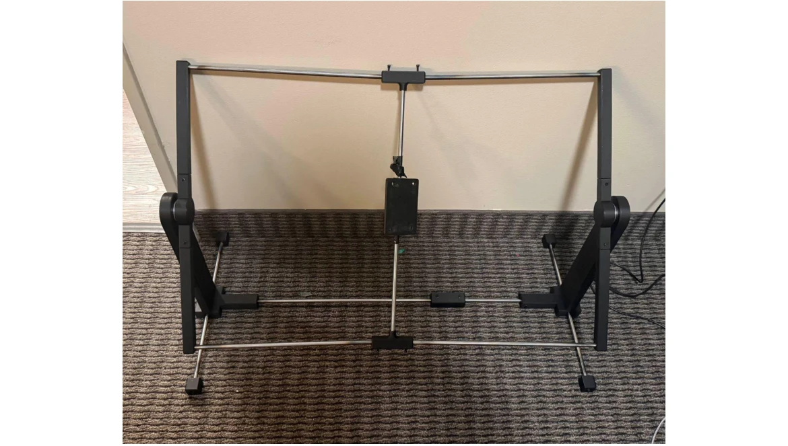

Variable Geometry Drone
A reconfigurable quadcopter built around a custom ESP32 flight controller, with wireless commands and attitude-control testing on a two-axis stand.
My focus: Electronics architecture and flight controls.
Team: Owen Geiss, Jay Suthar, and Tabitha Kwiatkowski.

- Flight computer
- ESP32 + MPU-6050
- Motor interface
- DSHOT300
- Firmware loop target
- 250 Hz
- Test-stand stabilization
- Approximately 1 second
Background
Our team set out to build a drone whose secondary arms could change orientation through servo-driven spur gears. The challenge was to integrate that mechanism with power distribution, wireless input, sensing, and a flight controller within one semester.
The mechanical design used mirrored gear trains and connecting rods to move the arms while maintaining propeller clearance. My focus was the electronics and control system: receiving commands, estimating attitude, and turning that feedback into motor corrections.
Electronics & communication
The drone used a 14.8 V, 1300 mAh 4S battery, regulated 5 V and 3.3 V supplies, and a four-in-one ESC. A second ESP32 connected to a PS2 controller sent commands over ESP-NOW, while stabilization ran locally on the drone.
I integrated the MPU-6050 over I2C and worked through the motor interface. Standard servo-control code did not work for the brushless motor setup, so I switched to DSHOT. The report’s final firmware uses DSHOT300 and includes a 500 ms communication-timeout disarm condition. That timeout is a firmware setting, not a measured safety-validation result.

Attitude control
I used a complementary filter to combine accelerometer and gyroscope measurements for roll and pitch, with the MPU-6050’s 44 Hz low-pass filter to reduce motor vibration in the feedback. The firmware targets a 250 Hz control loop; the report does not establish a measured loop rate.
I tuned the controller on the test stand. The integral term made the response too aggressive at our tuning stage, so I set its gain to zero and continued with proportional and derivative control. The motor mixer combined the attitude corrections with throttle to command the four motors.
The team also used Simulink to examine controller response, including a change in moment of inertia associated with folding the arms. Those plots show simulation behavior, not measured flight performance.


Test setup
The team developed three test-stand iterations. The first allowed motion about one axis; the second added roll and pitch rotation. Integration exposed a propeller-clearance problem, which prompted a third version for the final demonstration. Yaw was outside the test scope.

Results
The drone self-stabilized for approximately one second on the constrained stand before its response diverged. The controller generated corrective motor commands from sensor feedback, but sustained hover was not achieved.
The 9 g servos could not overcome the loads on the extended arms under gravity and motor vibration. We fixed the arms with adhesive for the final evaluation. The linkage worked when moved by hand, but the project did not demonstrate powered geometry changes during flight.
The report records reliable wireless commands, working arm/disarm and emergency-stop inputs, and consistent sensor feedback during testing. That gave us an integrated electronics platform, with actuator sizing and controller tuning still unresolved.
What I learned
An unsecured battery-voltage wire contacted the 3.3 V rail and damaged the ESP32 and IMU. That failure made connector identification, insulation, and wire restraint part of the engineering work rather than a final assembly task.
I would begin motor and sensor integration earlier and budget more time for the edit-upload-test cycle. The next mechanical iteration would need actuator torque calculations and load testing, along with tighter control of printed gear tolerances, before another attempt at powered reconfiguration.
Source: Variable Geometry Drone, Final Design Report, Owen Geiss, Jay Suthar, and Tabitha Kwiatkowski, May 8, 2026.